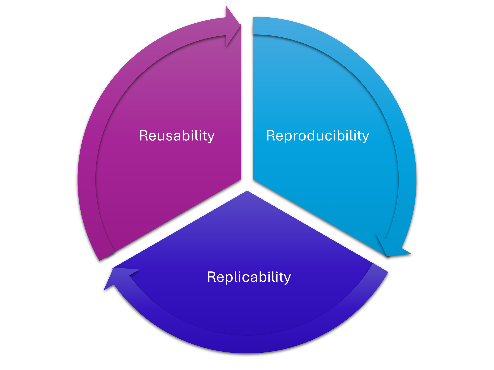

Introduction: Research Software Development in Python
What is Research Software Development?
- Creating tools, scripts, and applications that enable scientific discovery through data analysis, modeling, and simulation.
- Writing programs to process experimental data, automate repetitive tasks, implement mathematical models, and generate visualizations for scientific publications.
- Everything from simple data cleaning scripts in Python/R to complex simulation software, statistical analysis pipelines, workflows on High Performance Computing (HPC) platforms, and specialized scientific computing applications.
- The goal is producing reliable, reproducible computational workflows that support research while enabling other scientists to verify and build upon the work.
Computing in research
- No longer just the domain of computer science: embedded across all disciplines
- A key skill area for your future as a researcher
Reproducibility, Replicability, and Reusability
3 Rs of Research Software
Reproducibility, replicability and reusability are all interlinked.
Important
- These terms have different meanings for different disciplines, and are constantly evolving over time
- This presentation defines these terms based on Murphy Quinlan (2025) specifically with reference to research code being developed across disciplines
- There are many different ways to think about these topics, and it’s an ongoing discussion: you are welcome to disagree!
Reproducibility
Reproducibility…
is when you or others are able to obtain the same results (within a certain tolerance) as the original study, when using the same input data, code, and coding environment, on the same computing platform as the original study.
| Input | Aim | Ideal output |
|---|---|---|
| The same input data and code, on the same computer | Verify the results are real; catch mistakes, error, fraud | The same results! |
Reproducibility
What do you need for reproducibility?
- The exact code used;
- The exact data used;
- The exact computational environment used:
- A record of the machine/operating system;
- A record of the exact versions of all libraries and dependencies used
When reproducibility is missing
What are some examples of this going wrong?
- Not recording the version of a library you used, and certain future backwards-incompatible changes being made
- This means functions you used may no longer exist, or may take different input
- The best-case scenario is your code will no longer run, but will output an error, meaning you/any user will be able to do detective work to figure out what version of the library works
- The much worse outcome is that the code fails silently: it still runs, but the output changes because the way the libraries work has changed; it can be hard to spot that something has gone wrong!
- For example, the default values for functions may change, or the assumed units/co-ordinate systems etc.
When reproducibility is missing
- Running Jupyter notebook cells out of order…
- In a sample of 936 published notebooks that would be executable in principle, Wang et al. (2020) found that:
- 73% of them would not be reproducible with straightforward approaches
- The reader/user had to infer (and often guess) the order in which the authors created or ran the cells
Replicability
Replicability…
is when you or others are able to produce results that align with the results of the original study, while using different input data and different code, but using the original studies methods or theories.
| Input | Aim | Ideal output |
|---|---|---|
| The methods used previously, but not the same code/data | To test the validity of the results and conclusions | Similar results |
Replicability
What is needed for replicability?
- Clear and complete methodological documentation;
- Description of assumptions and caveats;
- A test suite to ensure code is working as expected.
When replicability is missing
- Not providing enough detail in publications about the exact methods used
- For example, not providing all the maths used in your code
- Uploading code without documentation, data without useful metadata, environment files and containers with no explanation of the contents: technically, one could run the code, but they may not be able to parse the methods used
- Not comparing your model to analytical results or other studies
- Only testing that the code and not the science/theory/assumptions behind it
Reusability
Reusability…
is when you or others are able to easily use the code or data produced as part of the original study, and potentially rework it and extend it for new applications, contexts, or studies.
| Input | Aim | Ideal output |
|---|---|---|
| The original code, expanded on, used with different data, modified | To continue doing research without reinventing the wheel, and instead recycle code | New results, in different contexts |
Reusability
What is needed for reusability?
- Good documentation on how to install/run/modify the code;
- This does not have to be formal - it can just be useful comments - but adhering to formal syntax etc. for documentation makes it easier to read and more useful!
- Providing useful shareable environment files (for example, a Conda environment file);
- Note that this is often different to a environment file for reproducibility - please read the links in the reproducibility section to understand the distinction!
- Including appropriate licensing so that people can legally use the code.
- A testing or validation suite to make sure that users are getting the correct results on their own computational system.
Reusability
Reusability oftentimes gets sidelined to let reproducibility take the main stage, but it is essential for research!
- Being able to produce the same results on a different platform hints at far more robust research code than only being able to reproduce the results on a single machine
- With the caveat that when it comes to floating point precision etc. systems, GPUs, builds, and compilers all will matter
- Research builds on other research and is incrememntal: you and other researchers should be able to use your code for future work!
Reusability
Nature Computer Science editorial: “But is the code (re)usable?”:
While it is crucial to guarantee the reproducibility of the results reported in a paper, let us also not forget about the importance of making research artifacts reusable for the scientific community.
Reusability […] entails obtaining consistent results with new data, and in some cases, in the context of a new scientific application. Making research artifacts, such as code, reusable allows other researchers to more easily investigate the same or similar scientific questions as new data become available and new ideas are developed, thus helping science progress at a faster pace.
Nature (2021)
Reproducibility, replicability and reusability are all interlinked.

When we discuss reproducibility more broadly (for example, with the “reproducibility crisis”), it’s often implied that reusability and replicability are also included under this umbrella.
The reproducibility crisis
More than 70% of researchers have tried and failed to reproduce another scientist’s experiments, and more than half have failed to reproduce their own experiments.
1,500 scientists lift the lid on reproducibility: Nature News Feature Baker (2016)
So how do we solve this?
- 📁 Clear directory structure - Everything has a logical place
- 📄 Comprehensive documentation - README files that actually help
- 🔄 Version control - Git tracks every change and decision
- 🧪 Organized data workflow - Raw → Processed → Results
- ✅ Testing framework - Confidence that your code works correctly
- 📦 Dependency management - Reproducible computational environment
So how do we solve this?
We’re going to work through each of these different topics using an example project
- You will be able to replicate this workflow for future research projects
- In our wrap-up section at the end of the course, we will also discuss how to apply these to existing, messy, legacy projects
Content of this course
Format
- This course contains these lecture slides, and also practical sessions.
- There is also an attached “further reading” resource list for you to dig into after the course.
- The aim is to introduce a toolbox of different methods to help you make your research code more reproducible, replicable, and reusable.
Why this course exists
- There is plentiful documentation online for each of the individual tools and methods we will introduce in this course
- However, as a researcher, it is often difficult to know how to embed these in your research workflow, and how they all work together
- This course aims to introduce these methods embedded in a practical and realistic workflow
Theory sessions
- Introduce concepts;
- Further notes and extra reading to expand upon ideas;
- Set up for the practical sessions.
Practicals
- Self-directed step-by-step exercises;
- Apply the concepts introduced in the theory sessions.
Virtual machine
- We will be using a virtual Linux machine hosted on GitHub codespaces
- This gives us free reign in a sandbox where we can’t break anything!
- You will be able to replicate these steps on your work machines
Creating a workflow
- “What should I do next?” - it’s often difficult to know what the sensible next step is when facing a computing task
- During this course, we will use a workflow template, and follow it step by step
Note: this is not the only way to organise your work!
- In fact, we recommend that you take the workflow we suggest, and change it until it suits your research process!
- The aim is for you to have a workflow that suits you, so when you’re in the midst of research, you at least have a direction of travel!
Designing a code project
Practical 1: Gathering requirements
- First, we need to figure out what our code needs to do:
- What sort of input data will it take?
- How big will the input data be?
- What file types will it take in?
- What will it do to that input data?
- How big or complex will this processing be?
- How will it output the data?
- What size will the output be?
- What file types will it save out?
- What sort of input data will it take?
Practical 1: Gathering requirements
- Then, we can think a bit more about the specifics:
- What programming language will it use?
- Where will it run?
- On our laptops?
- On a HPC system?
- Who will be running it?
- Just us?
- Us and some close collaborators?
- A wider research group?
- A larger research community?